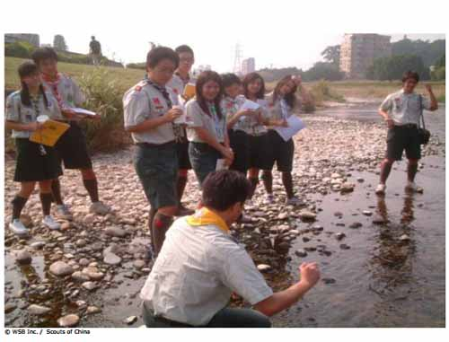

Vida de un río

Finalidad 1
Scouts trabajando a favor de un mundo en donde las personas y sistemas naturales tienen agua y aire limpios.
Objetivos educativos: Explorar las fuentes de agua limpia y aire limpio en el ambiente local. Demostrar la relación entre las acciones personales y la disponibilidad de agua y aire limpios en el ambiente localy global.Edad: Clan
Resumen: Una exploración de cómo un río o riachuelo pueden cambiar mientras fluye por el paisaje.
Objetivo: Explorar un río o riachuelo en el ambiente local e investigar cómo cambia naturalmente y por medio de la interacción con las personas.
Materiales y equipo: Jarras de vidrio, papel y lápices, cámara (opcional), equipo para canoa o balsa (opcional).
Preparación: Identifique un segmento de un río o riachuelo accesible en su localidad que se pueda recorrer aguas abajo por cierta distancia y observe los cambios. Si se realizan actividades en el agua, corrobore los procedimientos de seguridad apropiados y la experiencia de los participantes.
Duración: Variable, hasta un día.
Lugar: En la localidad, en la rivera del río o dentro del río con canoa o bote y equipo apropiado.
Antecedentes: Los ríos y riachuelos tienen muchos tamaños diferentes y son muy importantes para la ecología y para la gente que los usa por diversas razones. Un río puede tener un área de recolección o cuenca (área total de tierra que colecta y encamina en agua hacia el río) varias veces más grande que el propio río. El uso de la tierra en la cuenca puede afectar al río desde su punto de inicio (el lugar más alejado del río en la cuenca), hasta su punto de desembocadura (tal como cuando llega a un lago o al océano).
Los ríos cambian naturalmente al fluir a través del paisaje, donde diferentes plantas y animales toman ventaja del área que rodea al río. Las personas también usan el agua del río, las plantas y animales y la tierra que le rodea, la cual a menudo es muy fértil. Muchos asentamientos humanos iniciaron junto a ríos y han crecido progresivamente hasta convertirse en pueblos o incluso ciudades. Estos cambios en el nuevo ambiente creado también afectan al río en distintas maneras.
Guía paso a paso de la actividad
1. El objetivo de esta actividad es explorar la vida de un río y sus cambios a lo largo de la cuenca. Explore mapas del sistema hídrico para aprender más de la geografía del área, rasgos especiales o diferentes hábitats, y en dónde se localizan los asentamientos humanos que puedan necesitar el río o afectarlo. Inicie en una parte accesible del río o un poco más arriba en su área de recolección, tal como en un área de drenaje o un pequeño riachuelo.2. Siga el río corriente abajo y registre cómo cambia. ¿Cómo se ve el ambiente que le rodea? ¿Cómo interactúa la gente con el río? ¿El agua está limpia? Tome muestras del agua en jarras de vidrio mientras viaja a lo largo del río y registre dónde tomó cada muestra.
3. Incluya una sección del río que pase por un ambiente construido, tal como un pueblo o una ciudad. ¿Qué pasa con el agua allí y luego de que pasa por el ambiente construido?
Evaluación
1. Pida a los Scouts que presenten sus observaciones a medida que siguieron la vida del río. Podrían mostrar sus fotografías o bosquejos, muestras de agua o historias según el orden en el que fueron colectadas.
2. Discutan los resultados y la actividad. Utilice las siguientes preguntas para facilitar la discusión.
¿Cuáles fueron las observaciones de los Scouts sobre la naturaleza?
¿Cambio el ambiente mientras se viajaban por la cuenca?
¿Fueron los cambios naturales o influenciados por las personas?
¿Cómo interactuaban las personas con el río?
¿Había agua limpia disponible para las personas y sistemas naturales?
¿Cambió la calidad del agua en el ambiente construido?
Si hubieran actividades que estuvieran impactando negativamente la salud del ambiente y del agua
¿Cómo podría ser mejor administrada la cuenca?
¿Dónde se ubican los puntos de inicio y de desembocadura del río?
¿Necesitan las personas compartir el acceso al río?
¿Podría esto causar conflictos?
Actividades avanzadas
1. Pida a los Scouts que consideren cómo podría verse el río en el futuro y cómo pueden ellos ayudar a asegurar que las personas y sistemas naturales tengan agua y aire limpio.
2. Compartan sus experiencias y resultados con otras personas en la comunidad e identifiquen si hay maneras de proteger la salud del río.
© World Scout Bureau
Rue du Pré-Jérôme 5
PO Box 91
1211 Geneva 4 Plainpalais
Switzerland
Tel.: (+ 41 22) 705 10 10
Fax: (+ 41 22) 705 10 20
worldbureau@scout.org
scout.org
Reproduction is authorized to National Scout
Organizations and Associations which are
members of the World Organization of the Scout
Rue du Pré-Jérôme 5
PO Box 91
1211 Geneva 4 Plainpalais
Switzerland
Tel.: (+ 41 22) 705 10 10
Fax: (+ 41 22) 705 10 20
worldbureau@scout.org
scout.org
Reproduction is authorized to National Scout
Organizations and Associations which are
members of the World Organization of the Scout